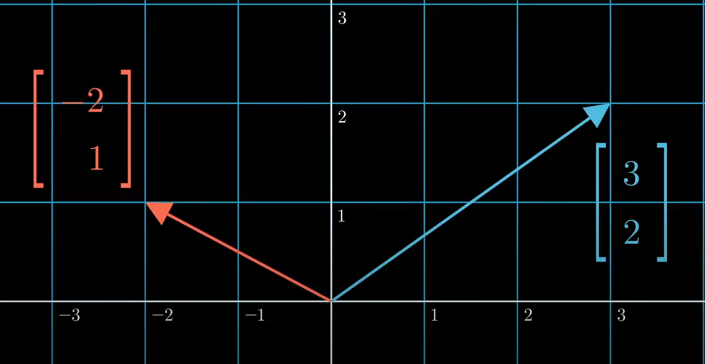
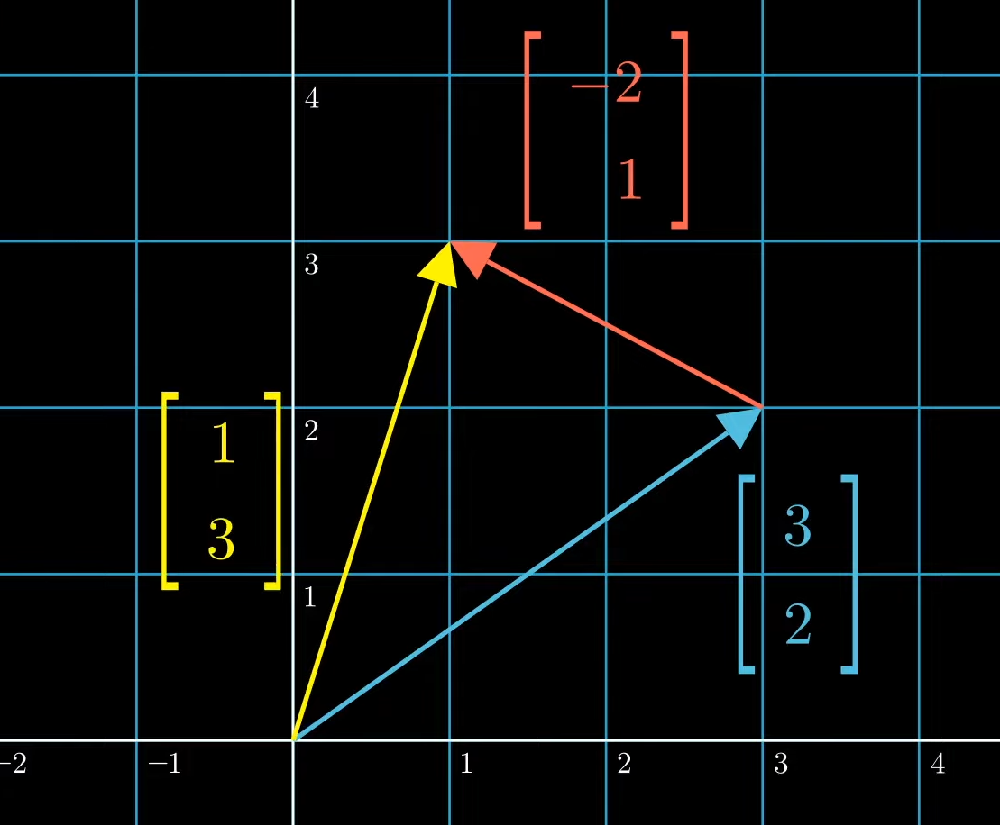
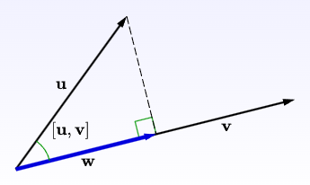

Code
import numpy as np
import matplotlib.pyplot as plt
plt.quiver(0, 0, 3, 2, color='b', angles='xy', scale_units='xy', scale=1)
plt.xlim(-0.5, 3.5)
plt.ylim(-0.5, 2.5)
plt.grid()
plt.show()
template
template
Deep learning is a pile of neural networks that are made up of layers of interconnected nodes or neurons, and the weights of the connections between them are learned through a process called backpropagation.
Linear algebra is fundamental to deep learning because many of the computations involved in training neural networks can be expressed as linear algebra operations. For example, matrix multiplication is used to compute the output of each layer in a neural network, and the gradients of the loss function with respect to the weights are computed using the chain rule of calculus, which involves matrix multiplication and vector operations.
In addition to matrix multiplication, other linear algebra concepts such as eigenvectors, eigenvalues, and singular value decomposition (SVD) are also important in deep learning. For example, SVD can be used to reduce the dimensionality of a dataset or to compute principal components, which are useful for data visualization and feature extraction.
Linear algebra libraries such as Numpy, Scipy, and PyTorch provide efficient implementations of these operations, which are essential for training large-scale neural networks on GPUs. Without these libraries, implementing deep learning algorithms would be much more difficult and time-consuming.
Reference: Motivation to Learn Linear Algebra
A scalar is a single mathematical quantity, usually a real number, which can be represented by a single value. Scalars are typically denoted by lowercase letters, such as \(a, b, c,\) and so on.
A vector \(\textbf{v}\) is a mathematical object that represents a quantity with both a magnitude and a direction. In \(n\)-dimensional Euclidean space \(\mathbb{R}^n\), a vector \(\textbf{v}\) is typically represented as an ordered list of \(n\) real numbers:
\[ \textbf{v}= \begin{bmatrix} v_1 \\ v_2 \\ \vdots \\ v_n \end{bmatrix} \]
where \(v_1, v_2, \ldots, v_n\) are the components of the vector \(\textbf{v}\).
Example
Map \(\begin{bmatrix} 3\\ 2 \end{bmatrix}\) into \(x=3\), \(y=2\) on the Coordinate Plane
import numpy as np
import matplotlib.pyplot as plt
plt.quiver(0, 0, 3, 2, color='b', angles='xy', scale_units='xy', scale=1)
plt.xlim(-0.5, 3.5)
plt.ylim(-0.5, 2.5)
plt.grid()
plt.show()
Reference: Read This Article with Interactive Visualization - Points and Vectors
A matrix is a rectangular array of elements, usually real numbers, arranged in rows and columns. If \(\mathbf{A}\) is an \(m \times n\) matrix, it can be represented as: \[ \begin{bmatrix} a_{11} & a_{12} & \cdots & a_{1n} \\ a_{21} & a_{22} & \cdots & a_{2n} \\ \vdots & \vdots & \ddots & \vdots \\ a_{m1} & a_{m2} & \cdots & a_{mn} \end{bmatrix} \] where \(a_{ij}\) is the element in the \(i\)-th row and \(j\)-th column of the matrix \(\mathbf{A}\).
The addition of two vectors is the process of adding their corresponding components. If \(\textbf{A}\) and \(\textbf{B}\) are two vectors of the same dimension, then their sum \(\textbf{C} = \textbf{A} + \textbf{B}\) is a vector whose \(i\)-th component is the sum of the \(i\)-th components of \(\textbf{A}\) and \(\textbf{B}\).
\[ \begin{align*} \textbf{C}&=\textbf{A}+\textbf{B}\\ C_i &= A_i + B_i \end{align*} \]
For example, if \(\textbf{A} = [1, 2, 3]\) and \(\textbf{B} = [4, 5, 6]\), then their sum \(\textbf{C} = [5, 7, 9]\).



The subtraction of two vectors is the process of subtracting their corresponding components. If \(\textbf{A}\) and \(\textbf{B}\) are two vectors of the same dimension, then their difference \(\textbf{C} = \textbf{A} - \textbf{B}\) is a vector whose \(i\)-th component is the difference between the \(i\)-th components of \(\textbf{A}\) and \(\textbf{B}\). The formal definition is:
\[ \begin{align*} \textbf{C}&=\textbf{A} - \textbf{B}\\ C_i &= A_i - B_i \end{align*} \]
For example, if \(\textbf{A} = [1, 2, 3]\) and \(\textbf{B} = [4, 5, 6]\), then their difference \(\textbf{C} = [-3, -3, -3]\).
The scalar multiplication of a vector is the process of multiplying each component of the vector by a scalar. If \(\textbf{A}\) is a vector and \(k\) is a scalar, then the scalar multiple \(\textbf{C} = k\textbf{A}\) is a vector whose \(i\)-th component is \(k\) times the \(i\)-th component of \(\textbf{A}\). The formal definition is:
\[ \begin{align*} \textbf{C}&=k\textbf{A}\\ C_i &= kA_i \end{align*} \]
For example, if \(\textbf{A} = [1, 2, 3]\) and \(k = 2\), then their scalar multiple \(\textbf{C} = [2, 4, 6]\).
Reference: Read This Article with Interactive Visualization - Properties of Vector Arithmetic
The dot product of two vectors is the sum of the products of their corresponding components (a.k.a dot product & scalar product). If \(\textbf{A}\) and \(\textbf{B}\) are two vectors of the same dimension, then their dot product \(\textbf{C} = \textbf{A} \cdot \textbf{B}\) is a scalar given by the formula:
\[ \begin{align*} \textbf{C}&=\textbf{A}\textbf{B}\\ &= \sum_{i=1}^{n}a_ib_i \end{align*} \]
In general, an inner product is a mathematical operation that takes two vectors and produces a scalar. It satisfies certain properties, such as being linear in the first argument, conjugate linear in the second argument, and positive-definite.
A dot product is a specific type of inner product that is defined for Euclidean spaces, which are spaces with a notion of distance or length. The dot product of two vectors is defined as the sum of the products of their corresponding components. In other words, if \(\mathbf a = [a_1, a_2, ..., a_n]\) and \(\mathbf b = [b_1, b_2, ..., b_n]\) are two vectors in \(\mathbb R^n\), then their dot product is given by:
\[ \mathbf a \cdot \mathbf b = a_1b_1 + a_2b_2 + ... + a_nb_n \]
The dot product satisfies some of the properties of an inner product, such as being linear in the first argument and symmetric. However, it is not conjugate linear in the second argument, and it is not positive-definite in general.
So, while a dot product is a specific type of inner product, not all inner products are dot products.
For example, if \(\textbf{A} = [1, 2, 3]\) and \(\textbf{B} = [4, 5, 6]\), then their dot product \(\textbf{C} = 1\cdot 4 + 2\cdot 5 + 3\cdot 6 = 32\).
The norm of a vector \(\mathbf{x}\) is a non-negative scalar value that represents the size or length of the vector. The norm is denoted by \(|\mathbf{x}|\) and satisfies the following properties:
Here is an example of finding the Euclidean norm of a vector: Suppose we have a vector \(\mathbf{x}=\begin{bmatrix}1 \\ -2 \\ 2\end{bmatrix}\). We can find its norm as follows:
\[ ||\mathbf x||=\sqrt{1^2+(-2)^2+2^2}=\sqrt{9}=3 \]
Therefore, the norm of \(\mathbf{x}\) is 3.
There are several types of norms:
Manhattan Norm or Absolute Norm or \(l_1\)-norm \[ \begin{equation*} |\mathbf{x}|_{l_1} = \sum_{i=1}^{n} |x_i| \end{equation*} \] where \(\mathbf{x}\) is a vector of length \(n\). Example: For \(\mathbf{x} = [1, -2, 3]\), \(|\mathbf{x}|_{l_1} = |1| + |-2| + |3| = 6\).
Euclidean Norm or \(l_2\)-norm \[ \begin{equation*} ||\mathbf{x}||_{l_2} = \sqrt{\sum_{i=1}^{n} x_i^2} \end{equation*} \] where \(\mathbf{x}\) is a vector of length \(n\). Example: For \(\mathbf{x} = [1, 2, 3]\), \(|\mathbf{x}|_{l_2} = \sqrt{1^2 + 2^2 + 3^2} = \sqrt{14}\).

For \(p \geq 1\), \[ \begin{equation*} ||\mathbf{x}||_p = (\sum_{i=1}^n |x_i|^p)^{\frac{1}{p}} \end{equation*} \] where \(\mathbf{x}\) is a vector of length \(n\). Example: For \(\mathbf{x} = [1, 2, 3]\), \(|\mathbf{x}|_{l_p} = \sqrt{1^p + 2^p + 3^p}\).

Let \(\mathbf{u}\) and \(\mathbf{v}\) be two vectors. The projection of \(\mathbf{u}\) onto \(\mathbf{v}\) is defined as the vector:
This vector is the closest vector to \(\mathbf{u}\) that lies on the line spanned by \(\mathbf{v}\). \[ \text{proj}_{\mathbf v}\mathbf u =\frac{\mathbf u \mathbf v}{||\mathbf v||^2} \mathbf v \] 
For example, let \(\mathbf{u} = \begin{bmatrix}2 \ 3\end{bmatrix}\) and \(\mathbf{v} = \begin{bmatrix}1 \\ 1\end{bmatrix}\). Then, the projection of \(\mathbf{u}\) onto \(\mathbf{v}\) is:
\[ \text{proj}_{\mathbf v}\mathbf u =\frac{\mathbf u \mathbf v}{||\mathbf v||^2} \mathbf v =\frac{\begin{bmatrix}2 \\ 3\end{bmatrix}\begin{bmatrix}1 \\ 1\end{bmatrix}}{\bigg{|}\bigg{|}\begin{bmatrix}1 \\ 1\end{bmatrix}\bigg{|}\bigg{|}^2}=\frac{5}{2}\begin{bmatrix}1 \\ 1\end{bmatrix}=\begin{bmatrix}5 \\ 2\end{bmatrix} \]
This vector is the closest vector to \(\mathbf{u}\) that lies on the line spanned by \(\mathbf{v} = \begin{bmatrix}1 \\ 1\end{bmatrix}\).
Reference: Read This Article with Interactive Visualization - Projection
The cross product of two vectors is a vector that is perpendicular to both of them. If \(\textbf{A}\) and \(\textbf{B}\) are two vectors in \(\mathbb{R}^3\), then their cross product \(\textbf{C} = \textbf{A} \times \textbf{B}\) is a vector given by the formula
\[ $\textbf{C} = \textbf{A} \times \textbf{B}$ = [A_2B_3 - A_3B_2, A_3B_1 - A_1B_3, A_1B_2 - A_2B_1] \]
For example, if \(\textbf{A} = [1, 2, 3]\) and \(\textbf{B} = [4, 5, 6]\), then their cross product \(\textbf{C} = [-3, 6, -3]\).
\[ \begin{bmatrix} a_{11} & a_{12} & \cdots & a_{1n} \\ a_{21} & a_{22} & \cdots & a_{2n} \\ \vdots & \vdots & \ddots & \vdots \\ a_{m1} & a_{m2} & \cdots & a_{mn} \end{bmatrix} \]
A column vector \(\mathbf{x}\) with \(n\) elements is an \(m \times 1\) matrix, which can be represented as: \[ \mathbf{x} = \begin{bmatrix} x_{1} \\ x_{2} \\ \vdots \\ x_{m} \end{bmatrix} \]
where \(x_i\) is the \(i\)-th element of the column vector \(\mathbf{x}\) and \(m\) is the number of rows in the matrix. A row vector \(\mathbf{y}\) with \(m\) elements is a \(1 \times n\) matrix, which can be represented as: \[ \mathbf{y} = \begin{bmatrix} y_{1} & y_{2} & \cdots & y_{n} \end{bmatrix} \]
where \(y_i\) is the \(i\)-th element of the row vector \(\mathbf{y}\) and \(n\) is the number of columns in the matrix.
The sum of two matrices of the same size is a matrix of the same size obtained by adding corresponding entries.
Given two \(m \times n\) matrices \(\mathbf{A}\) and \(\mathbf{B}\), their sum \(\mathbf{C} = \mathbf{A} + \mathbf{B}\) is defined by:
\[ c_{i,j}=a_{i,j}+b_{i,j} \] for \(1 \leq i \leq m\) and \(1 \leq j \leq n\).
\[ \begin{bmatrix} 1 & 2 \\ 3 & 4 \\ 5 & 6 \end{bmatrix} + \begin{bmatrix} -1 & 0 \\ 2 & -3 \\ -5 & 4 \end{bmatrix} = \begin{bmatrix} 0 & 2 \\ 5 & 1 \\ 0 & 10 \end{bmatrix} \]
The product of a scalar and a matrix is a matrix obtained by multiplying each entry of the matrix by the scalar.
Given a scalar \(k\) and an \(m \times n\) matrix \(\mathbf{A}\), their product \(k\mathbf{A}\) is defined by: \[ (k\mathbf{A})_{i,j} = k(a_{i,j}) \] for \(1 \leq i \leq m\) and \(1 \leq j \leq n\).
Example: \[ 2\begin{bmatrix} 1 & 2 \\ 3 & 4 \\ 5 & 6 \end{bmatrix} = \begin{bmatrix} 2 & 4 \\ 6 & 8 \\ 10 & 12 \end{bmatrix} \]
The product of two matrices \(\mathbf{A}\) and \(\mathbf{B}\) is a matrix obtained by multiplying the rows of \(\mathbf{A}\) by the columns of \(\mathbf{B}\).
Given two matrices \(\mathbf{A}\) and \(\mathbf{B}\) with dimensions \(m \times n\) and \(n \times p\), respectively, their product \(\mathbf{C} = \mathbf{AB}\) is an \(m \times p\) matrix defined by: \[ c_{i,j} = \sum_{k=1}^n a_{i,k}b_{k,j} \] for \(1 \leq i \leq m\) and \(1 \leq j \leq p\).
Example: \[ \begin{bmatrix} 1 & 2 \\ 3 & 4 \\ 5 & 6 \end{bmatrix} \begin{bmatrix} -1 & 0 & 2 \\ 2 & -3 & 1 \end{bmatrix} = \begin{bmatrix} 3 & -6 & 4 \\ 5 & -12 & 10 \\ 7 & -18 & 16 \end{bmatrix} \]
The transpose of an \(m x n\) matrix A, denoted by \(A^T\), is the \(n x m\) matrix obtained by interchanging the rows and columns of A. Formally, if \(\mathbf{A} = [a_{ij}]\) is an m x n matrix, then its transpose \(\mathbf{A}^T = [b_{ij}]\) is an \(n x m\) matrix where \(b_{ij}\) = \(a_{ji}\) for all \(i\) and \(j\). In other words, the element in the \(i\) th row and \(j\) th column of \(A^T\) is equal to the element in the \(j\) th row and ith column of \(\mathbf{A}\).
Given an \(m \times n\) matrix \(\mathbf{A}\), its transpose \(\mathbf{A}^T\) is an \(n \times m\) matrix defined by: $$ {i,j}^T = {j,i}
$$
Example:
Let A be the matrix \[ \mathbf{A} = \begin{bmatrix} 1 & 2 & 3\\ 4 & 5 & 6 \end{bmatrix} \] The transpose of A, denoted by A^T, is the matrix \[ \mathbf{A}^T = \begin{bmatrix} 1 & 4\\ 2 & 5\\ 3 & 6 \end{bmatrix} \]
Let \(\mathbf{A}\) be an \(n \times n\) square matrix. The determinant of \(\mathbf{A}\), denoted by \(|\mathbf{A}|\) or \(\det(\mathbf{A})\), is a scalar value calculated as the sum of the products of the elements in any row or column of \(\mathbf{A}\) with their corresponding cofactors, that is,
\[ |\mathbf{A}|=\sum_{i=1}^{n}a_{ij}C_{ij}=\sum_{j=1}^{n}a_{ij}C_{ij} \]
where \(a_{ij}\) is the element of \(\mathbf{A}\) in the \(i\)-th row and \(j\)-th column, and \(C_{ij}\) is the cofactor of \(a_{ij}\). The cofactor of \(a_{ij}\), denoted by \(C_{ij}\), is given by \((-1)^{i+j}\) times the determinant of the \((n-1) \times (n-1)\) matrix obtained by deleting the \(i\)-th row and \(j\)-th column of \(\mathbf{A}\).
The determinant of an \(n x n\) matrix \(\mathbf{A}\) is a scalar value denoted as \(|\mathbf{A}|\). It is defined as the sum of all possible products of n elements taken one from each row and one from each column, where the sign of each product alternates according to the position of the element in the matrix. For example, the determinant of a \(3 x 3\) matrix \(\mathbf{A} =\) \[ \begin{bmatrix} a_{11} & a_{12} & a_{13} \\ a_{21} & a_{22} & a_{23} \\ a_{31} & a_{32} & a_{33} \\ \end{bmatrix} \]
is given by:
\[ |\mathbf{A}| = a_{11} \begin{vmatrix} a_{22} & a_{23} \\ a_{32} & a_{33} \end{vmatrix} - a_{12} \begin{vmatrix} a_{21} & a_{23} \\ a_{31} & a_{33} \end{vmatrix} + a_{13} \begin{vmatrix} a_{21} & a_{22} \\ a_{31} & a_{32} \end{vmatrix} \]
For example, consider the \(3 \times 3\) matrix \(\mathbf{A} = \begin{bmatrix} 1 & 2 & 3 \\ 4 & 5 & 6 \\ 7 & 8 & 9 \end{bmatrix}\). We can calculate the determinant of \(\mathbf{A}\) using any row or column. Let’s use the first column:
\[ |\mathbf{A}| = 1 \begin{vmatrix} 5 & 6 \\ 8 & 9 \end{vmatrix} - 4 \begin{vmatrix} 2 & 3\\ 8 & 9 \end{vmatrix} + 7 \begin{vmatrix} 2 & 5 \\ 3 & 6 \end{vmatrix} = 0 \]
Therefore, the determinant of \(\mathbf{A}\) is zero.
The inverse of a square matrix \(A\) of size \(n\) is a matrix \(A^{-1}\) such that the product of \(A\) and \(A^{-1}\) is the identity matrix \(I_n\), i.e. \(A \times A^{-1} = I_n\). If such a matrix exists, then \(A\) is said to be invertible or non-singular.
The inverse of a square matrix \(\mathbf{A}\) is denoted by \(\mathbf{A}^{-1}\) and is defined as the unique matrix that satisfies the following equation: \[ \mathbf{A}^{-1}\mathbf{A} = \mathbf{A}\mathbf{A}^{-1} = \mathbf{I} \]
where \(\mathbf{I}\) is the identity matrix. Not all matrices have an inverse, and a matrix that has an inverse is called invertible or nonsingular. A matrix that does not have an inverse is called singular.
For example, consider the \(2\times 2\) matrix \[ \mathbf{A} = \begin{bmatrix} 1 & 2 \\ 3 & 4 \end{bmatrix}. \] The inverse of \(\mathbf{A}\) is given by:
\[ \mathbf{A}^{-1} = \frac{1}{-2} \begin{bmatrix} 4 & -2 \\ -3 & 1 \end{bmatrix} = \begin{bmatrix} -2 & 1 \\ \frac{3}{2} & -\frac{1}{2} \end{bmatrix} \]
We can verify that \(\mathbf{A}\mathbf{A}^{-1} = \mathbf{A}^{-1}\mathbf{A} = \mathbf{I}\) by computing:
\[ \mathbf{A}\mathbf{A}^{-1} = \begin{bmatrix} 1 & 2 \\ 3 & 4 \end{bmatrix} \begin{bmatrix} -2 & 1 \\ \frac{3}{2} & -\frac{1}{2} \end{bmatrix} = \begin{bmatrix} 1 & 0 \\ 0 & 1 \end{bmatrix} = \mathbf{I} \]
\[ \mathbf{A}^{-1}\mathbf{A} = \begin{bmatrix} -2 & 1 \\ \frac{3}{2} & -\frac{1}{2} \end{bmatrix} \begin{bmatrix} 1 & 2 \\ 3 & 4 \end{bmatrix} = \begin{bmatrix} 1 & 0 \\ 0 & 1 \end{bmatrix} = \mathbf{I} \]
Let me give another example and A be a \(3x3\) square matrix:
\[ \begin{equation*} \mathbf{A} = \begin{bmatrix} a_{11} & a_{12} & a_{13} \\ a_{21} & a_{22} & a_{23} \\ a_{31} & a_{32} & a_{33} \\ \end{bmatrix} \end{equation*} \] Then, the inverse of \(\mathbf{A}\), denoted as \(\mathbf{A}^{-1}\), is given by:
\[ \begin{equation*} \mathbf{A}^{-1} = \frac{1}{\text{det}(\mathbf{A})}\begin{bmatrix} a_{22}a_{33}-a_{23}a_{32} & a_{13}a_{32}-a_{12}a_{33} & a_{12}a_{23}-a_{13}a_{22} \\ a_{23}a_{31}-a_{21}a_{33} & a_{11}a_{33}-a_{13}a_{31} & a_{13}a_{21}-a_{11}a_{23} \\ a_{21}a_{32}-a_{22}a_{31} & a_{12}a_{31}-a_{11}a_{32} & a_{11}a_{22}-a_{12}a_{21} \\ \end{bmatrix} \end{equation*} \]
where \(det(\mathbf{A})\) is the determinant of \(\mathbf{A}\).
For example, let:
\[ \begin{equation*} \mathbf{A} = \begin{bmatrix} 1 & 2 & 3 \\ 0 & 1 & 4 \\ 5 & 6 & 0 \\ \end{bmatrix} \end{equation*} \] Then, \(det(A)\) = -57, and the inverse of \(\mathbf{A}\) is:
\[ \begin{equation*} \mathbf{A}^{-1} = \frac{1}{-57}\begin{bmatrix} -24 & 18 & 5 \\ 20 & -15 & -4 \\ -3 & 2 & 1 \\ \end{bmatrix} \end{equation*} \]
There are several formulas for finding the inverse of a matrix such as Gauss-Jordan Elimination, Adjoint method, Cramer’s rule, Inverse formula, etc. This topic is going to be handled in the other blogs.
The rank of a matrix is the dimension of the vector space spanned by its columns (or rows). It is denoted by \(\text{rank}(\mathbf{A})\).
For example, consider the following matrix:
\[ \begin{equation*} \mathbf{A} = \begin{bmatrix} 1 & 2 & 3\\ 4 & 5 & 6 \\ 7 & 8 & 9\\ \end{bmatrix} \end{equation*} \]
The columns of \(\mathbf{A}\) are linearly dependent since the third column is equal to the sum of the first two columns. Therefore, the dimension of the vector space spanned by the columns is 2, so the rank of \(\mathbf{A}\) is 2.
The trace of a square matrix \(\mathbf{A}\), denoted by \(\mathrm{tr}(\mathbf{A})\), is defined as the sum of the diagonal elements of \(\mathbf{A}\). In other words, if \(\mathbf{A}\) is an \(n \times n\) matrix, then its trace is given by:
\[ \mathrm{tr}(\mathbf{A})=\sum_{i=1}^{n}a_{ij} \]
where \(a_{ii}\) denotes the \(i\) th diagonal element of \(\mathbf{A}\).
For example, let \[ \begin{bmatrix} 2 & 3 & 1 \\ 0 & 5 & 2 \\ 1 & 1 & 4 \end{bmatrix} \] Then, the trace of \(\mathbf{A}\) is \(\mathrm{tr}(\mathbf{A}) = 2 + 5 + 4 = 11\)
Let A be an \(n × n\) square matrix. A scalar \(\lambda\) is called an eigenvalue of \(\mathbf A\) if there exists a non-zero vector \(\mathbf{v}\) such that \[ \mathbf{Av}=\lambda\mathbf{v} \]
Such a vector \(\mathbf{v}\) is called an eigenvector corresponding to \(\lambda\).
Example:
Let \(\mathbf A\) be the matrix
To find the eigenvalues of \(\mathbf A\), we solve the characteristic equation \(\text{det}(\mathbf A - \lambda \mathbf I ) = 0\), where I is the n × n identity matrix.
\[ \begin{align*} \text{det}(\mathbf A - \lambda \mathbf I ) &= \begin{vmatrix} 3 - \lambda & 1 \\ 1 & 3 - \lambda \end{vmatrix} \\ &= (3 - \lambda)(3 - \lambda) - 1 \\ &= \lambda^2 - 6\lambda + 8 = 0 \end{align*} \]
Solving this quadratic equation gives us the eigenvalues of \(\mathbf A\): \(\lambda_1 = 2\) and \(\lambda_2 = 4\).
To find the eigenvectors corresponding to \(\lambda_1 = 2\), we solve the equation \((\mathbf A - 2 \mathbf I)\mathbf{v} = \mathbf{0}\), where \(\mathbf I\) is the \(2 \times 2\) identity matrix.
\[ \begin{align*} (\mathbf A - 2 \mathbf I)\mathbf{v} = \begin{bmatrix} 1 & 1 \\ 1 & 1 \end{bmatrix} \begin{bmatrix} x \ y \end{bmatrix} = \begin{bmatrix} 0 \ 0 \end{bmatrix} \end{align*} \]
Solving this system of equations gives us the eigenvectors corresponding to \(\lambda_1 = 2\): \(\mathbf{v_1} = \begin{bmatrix} -1 \\ 1 \end{bmatrix}\)
Similarly, for \(\lambda_2 = 4\), we solve the equation \((\mathbf A - 4\mathbf I)\mathbf{v}\) = \(\mathbf{0}\) to get the eigenvectors corresponding to \(\lambda_2 = 4\): \(\mathbf{v_2} = \begin{bmatrix} 1 \\ 1 \end{bmatrix}\)
The singular value decomposition (SVD) of a matrix \(\mathbf A\) is a factorization of \(\mathbf A\) into the product of three matrices as follows:
\[ \mathbf{A} = \mathbf{U} \mathbf{\Sigma} \mathbf{V}^T \] where \(\mathbf{U}\) is an \(m \times m\) orthogonal matrix, \(\mathbf{\Sigma}\) is an \(m \times n\) rectangular diagonal matrix with non-negative real numbers on the diagonal, and \(\mathbf{V}\) is an \(n \times n\) orthogonal matrix.
The diagonal entries of \(\mathbf{\Sigma}\) are called the singular values of \(\mathbf{A}\), denoted as \(\sigma_1, \sigma_2, \ldots, \sigma_r\) (where \(r\) is the rank of \(\mathbf{A}\)), and are arranged in descending order. The columns of \(\mathbf{U}\) and \(\mathbf{V}\) are called the left and right singular vectors of \(\mathbf{A}\), respectively, and are orthonormal vectors.
For example, let \(\mathbf{A}\) be a 3 by 2 matrix given by:
\[ \begin{equation*} \mathbf{A} = \begin{bmatrix} 1 & 2\\ 3 & 4\\ 5 & 6 \end{bmatrix} \end{equation*} \]
The SVD of A is given by:
\[ \begin{equation*} \mathbf{A} = \mathbf{U} \mathbf{\Sigma} \mathbf{V}^T = \begin{bmatrix} -0.23 & -0.53 & -0.81\\ -0.53 & -0.72 & 0.45\\ -0.81 & 0.45 & -0.38 \end{bmatrix} \begin{bmatrix} 9.53 & 0\\ 0 & 0.90\\ 0 & 0 \end{bmatrix} \begin{bmatrix} -0.62 & -0.78\\ -0.78 & 0.62 \end{bmatrix}^T \end{equation*} \]
where the left singular vectors of \(\mathbf{A}\) are the columns of \(\mathbf{U}\), the right singular vectors of \(\mathbf{A}\) are the columns of \(\mathbf{V}\), and the singular values of \(\mathbf{A}\) are the diagonal entries of \(\boldsymbol{\Sigma}\).
…and also see
full column rank 일때

full row rank 일때
full rank 일때(square matrix): 해가 하나 존재 (\(\mathbf{x} = A^{-1}\)$)
rank-deficient 일때